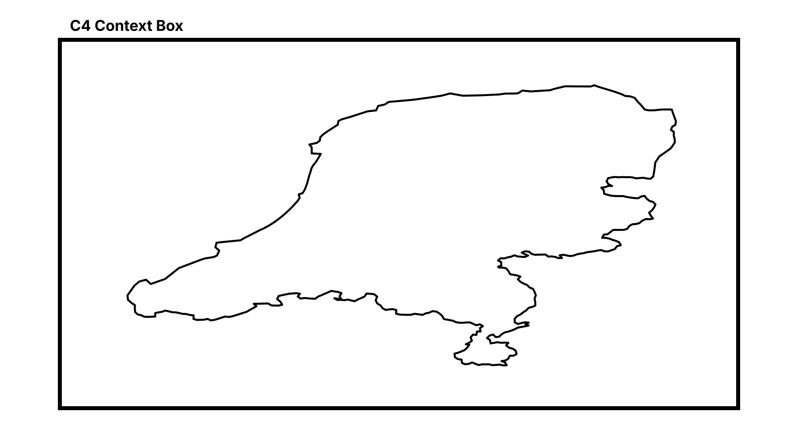
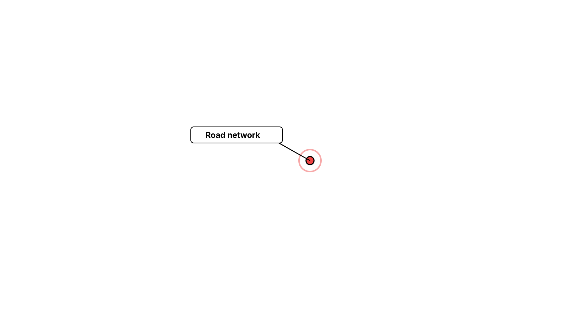
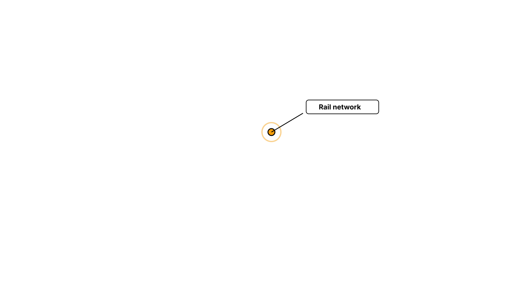
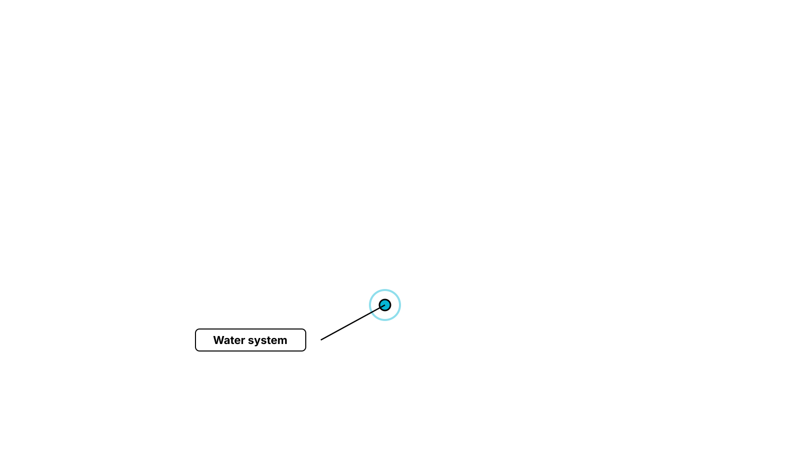
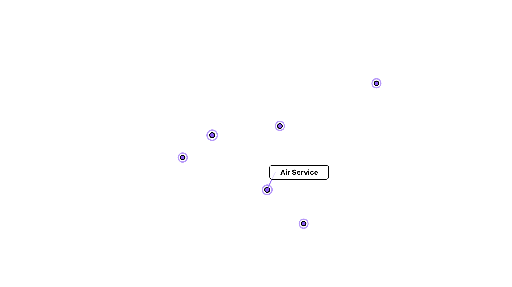
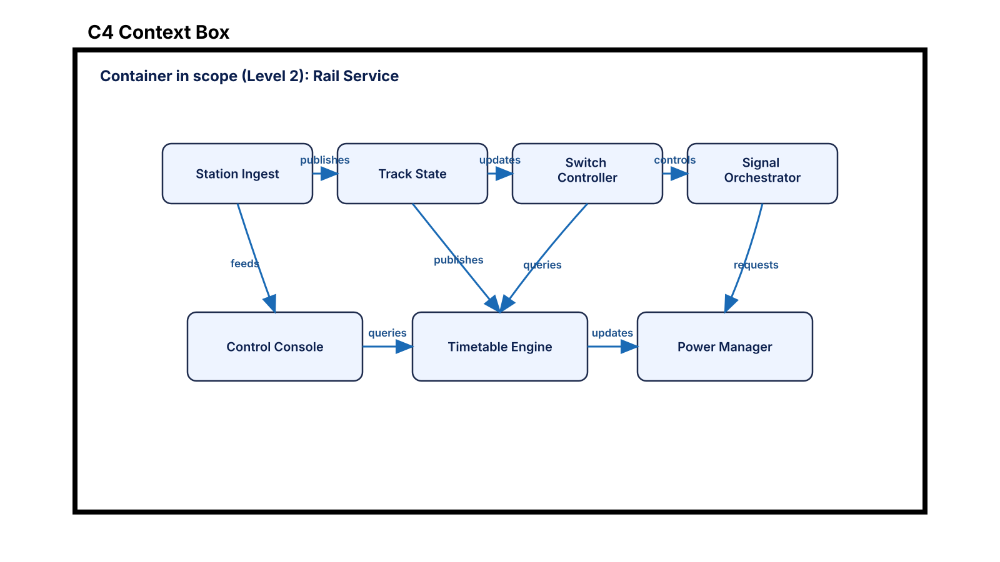
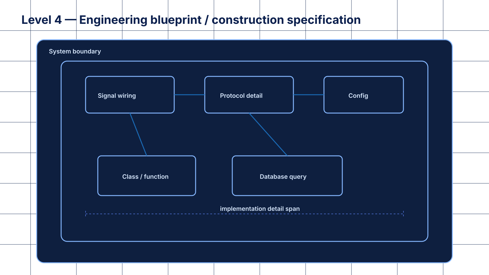

Traveler-system map: The Netherlands in traveler context.
Question: What surrounds and connects to our system?
Traveler-system map: Main traveler domains inside the system.
Question: What are the major traveler domains inside the system, and how do they connect?
Traveler-system map: Inside one traveler domain.
Question: How is one major part structured internally?
Traveler-system map: Implementation blueprint / specification.
Question: How is it built in exact detail?







Define the system boundary, external systems, and traveler actors.
Map the major road, railway, water, and air domains and how they connect.
Zoom into one traveler domain to see components and dependencies.
Capture exact implementation details for engineering and delivery.
Simple request-response interaction.
Consumer asks exactly for the data it needs.
Continuous two-way updates.
External system notifies us when something happens.
Efficient internal service-to-service communication.
Strict, formal, enterprise or legacy integration.